4. Plotting brain images¶
In this section, we detail the general tools to visualize neuroimaging volumes with nilearn.
Nilearn comes with plotting function to display brain maps coming from
Nifti-like images, in the nilearn.plotting module.
Contents
Code examples
Nilearn has a whole section of the example gallery on plotting.
A small tour of the plotting functions can be found in the example Plotting tools in nilearn.
Finally, note that, as always in the nilearn documentation, clicking on a figure will take you to the code that generates it.
4.1. Different plotting functions¶
Nilearn has a set of plotting functions to plot brain volumes that are fined tuned to specific applications. Amongst other things, they use different heuristics to find cutting coordinates.
| 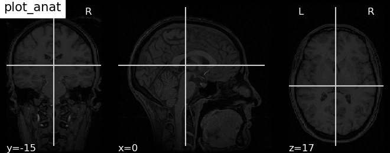 | plot_anat
Plotting an anatomical image |
| 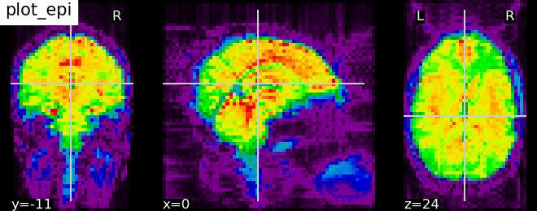 | plot_epi
Plotting an EPI, or T2* image |
| 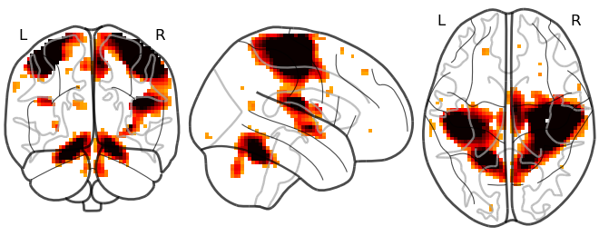 | plot_glass_brain
Glass brain visualization. By default plots maximum intensity projection of the absolute values. To plot positive and negative values set plot_abs parameter to False. |
| 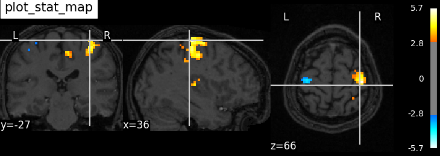 | plot_stat_map
Plotting a statistical map, like a T-map, a Z-map, or an ICA, with an optional background |
| 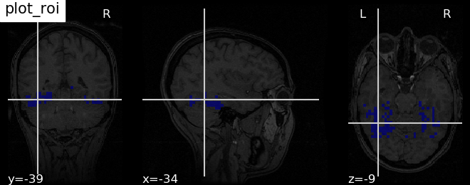 | plot_roi
Plotting ROIs, or a mask, with an optional background |
| 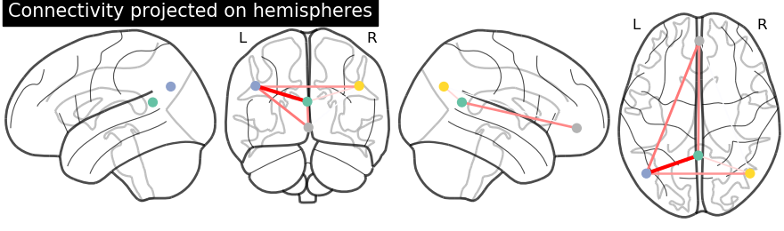 |
Functions for automatic extraction of coords based on
brain parcellations useful for |
| 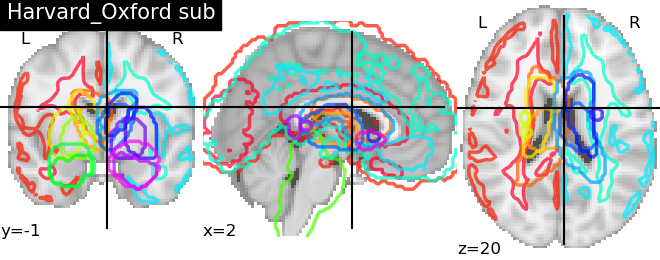 | plot_prob_atlas
Plotting 4D probabilistic atlas maps |
| plot_img | plot_img
General-purpose function, with no specific presets |
Warning
Opening too many figures without closing
Each call to a plotting function creates a new figure by default. When used in non-interactive settings, such as a script or a program, these are not displayed, but still accumulate and eventually lead to slowing the execution and running out of memory.
To avoid this, you must close the plot as follow:
>>> from nilearn import plotting
>>> display = plotting.plot_stat_map(img)
>>> display.close()
4.2. Different display modes¶
| 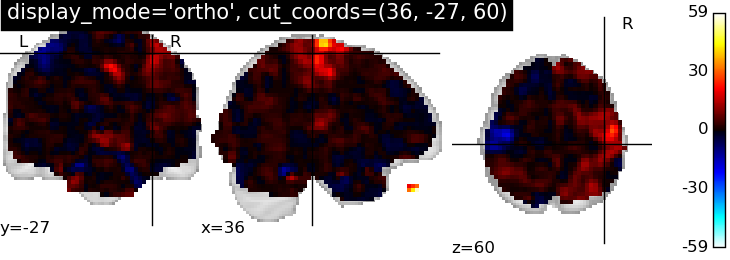 | display_mode=’ortho’, cut_coords=[36, -27, 60]
Ortho slicer: 3 cuts along the x, y, z directions |
| 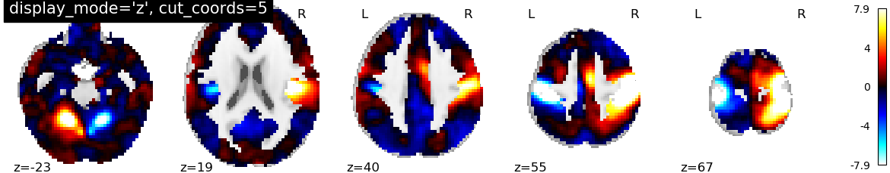 | display_mode=’z’, cut_coords=5
Cutting in the z direction, specifying the number of cuts |
| 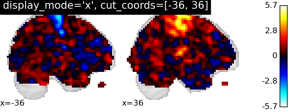 | display_mode=’x’, cut_coords=[-36, 36]
Cutting in the x direction, specifying the exact cuts |
| 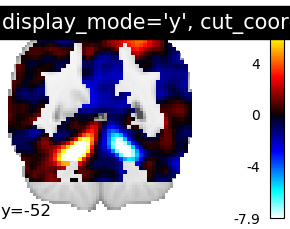 | display_mode=’y’, cut_coords=1
Cutting in the y direction, with only 1 cut, that is automatically positionned |
| 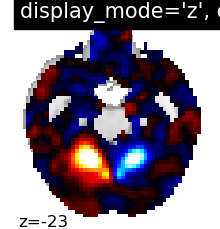 | display_mode=’z’, cut_coords=1, colorbar=False
Cutting in the z direction, with only 1 cut, that is automatically positionned |
| 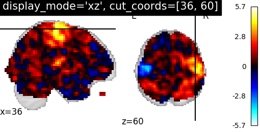 | display_mode=’xz’, cut_coords=[36, 60]
Cutting in the x and z direction, with cuts manually positionned |
| 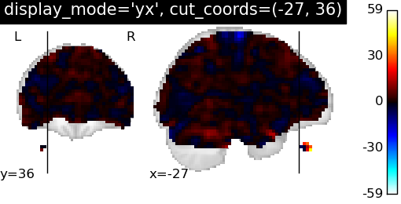 | display_mode=’yx’, cut_coords=[-27, 36]
Cutting in the y and x direction, with cuts manually positionned |
| 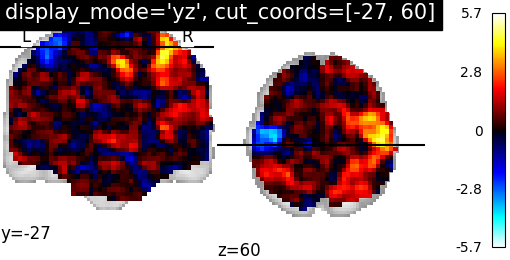 | display_mode=’yz’, cut_coords=[-27, 60]
Cutting in the y and z direction, with cuts manually positionned |
| 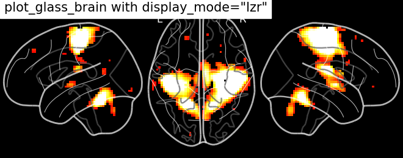 | Glass brain display_mode=’lzr’
Glass brain and Connectome provide additional display modes due to the possibility of doing hemispheric projections. Check out: ‘l’, ‘r’, ‘lr’, ‘lzr’, ‘lyr’, ‘lzry’, ‘lyrz’. |
| 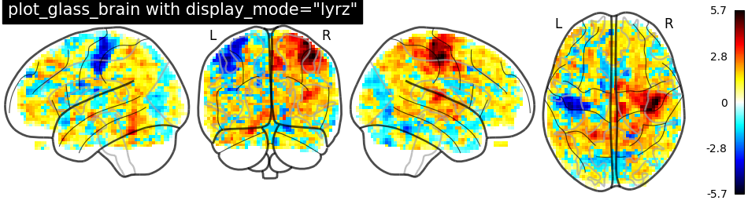 | Glass brain display_mode=’lyrz’
Glass brain and Connectome provide additional display modes due to the possibility of doing hemispheric projections. Check out: ‘l’, ‘r’, ‘lr’, ‘lzr’, ‘lyr’, ‘lzry’, ‘lyrz’. |
4.3. Available Colormaps¶
Nilearn plotting library ships with a set of extra colormaps, as seen in the image below
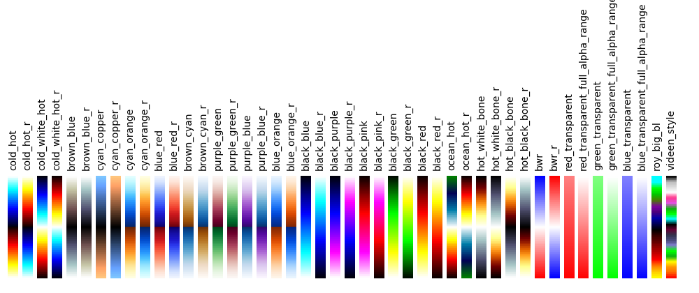These colormaps can be used as any other matplotlib colormap.
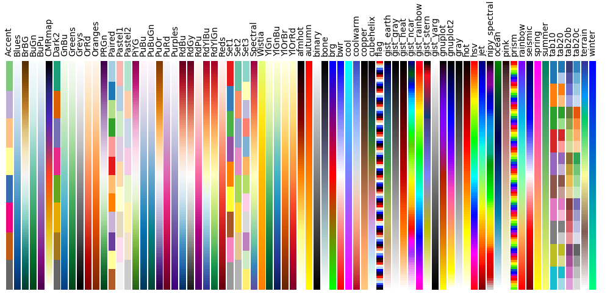4.4. Adding overlays, edges, contours, contour fillings, markers, scale bar¶
To add overlays, contours, or edges, use the return value of the plotting
functions. Indeed, these return a display object, such as the
nilearn.plotting.displays.OrthoSlicer. This object represents the
plot, and has methods to add overlays, contours or edge maps:
display = plotting.plot_epi(...)
| 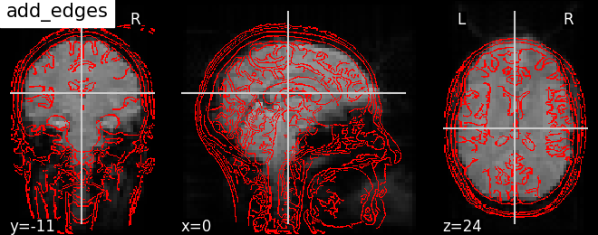 | display.add_edges(img)
Add a plot of the edges of img, where edges are extracted using a Canny edge-detection routine. This is typically useful to check registration. Note that img should have some visible sharp edges. Typically an EPI img does not, but a T1 does. |
| 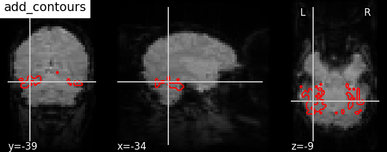 | display.add_contours(img, levels=[.5], colors=’r’)
Add a plot of the contours of img, where contours are computed for constant values, specified in ‘levels’. This is typically useful to outline a mask, or ROI on top of another map. Example: Plot Haxby masks |
| display.add_contours(img, filled=True, alpha=0.7, levels=[0.5], colors=’b’)
Add a plot of img with contours filled with colors |
|
| 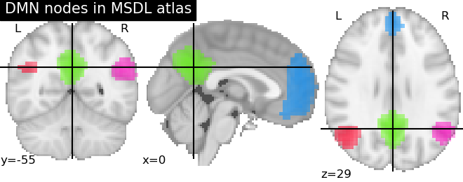 | display.add_overlay(img, cmap=plotting.cm.purple_green, threshold=3)
Add a new overlay on the existing figure Example: Visualizing a probablistic atlas: the default mode in the MSDL atlas |
| 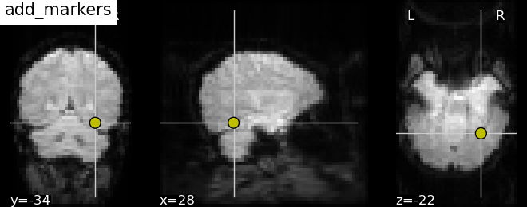 | display.add_markers(coords, marker_color=’y’, marker_size=100)
Add seed based MNI coordinates as spheres on top of statistical image or EPI image. This is useful for seed based regions specific interpretation of brain images. Example: Producing single subject maps of seed-to-voxel correlation |
| 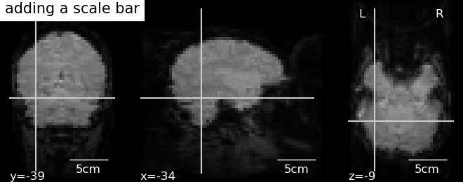 | display.annotate(scalebar=True)
Adds annotations such as a scale bar, or the cross of the cut coordinates Example: More plotting tools from nilearn |
4.5. Displaying or saving to an image file¶
To display the figure when running a script, you need to call
nilearn.plotting.show: (this is just an alias to
matplotlib.pyplot.show):
>>> from nilearn import plotting
>>> plotting.show()
The simplest way to output an image file from the plotting functions is to specify the output_file argument:
>>> from nilearn import plotting
>>> plotting.plot_stat_map(img, output_file='pretty_brain.png')
In this case, the display is closed automatically and the plotting function returns None.
The display object returned by the plotting function has a savefig method that can be used to save the plot to an image file:
>>> from nilearn import plotting
>>> display = plotting.plot_stat_map(img)
>>> display.savefig('pretty_brain.png')
# Don't forget to close the display
>>> display.close()
4.6. Surface plotting¶
Plotting functions required to plot surface data or statistical maps on a brain surface.
New in version 0.3.
| 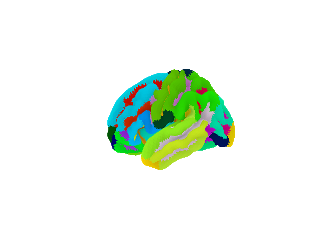 | plot_surf_roi
Plotting surface atlases on a brain surface Example: Loading and plotting of a cortical surface atlas |
| 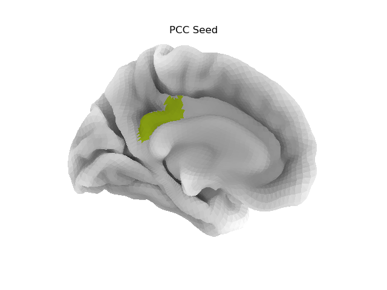 | plot_surf_stat_map
Plotting statistical maps onto a brain surface Example: Seed-based connectivity on the surface |
4.7. Interactive plots¶
Nilearn also has functions for making interactive plots that can be seen in a web browser.
New in version 0.5: Interactive plotting is new in nilearn 0.5
For 3D surface plots of statistical maps or surface atlases, use
view_img_on_surf and view_surf. Both produce a 3D plot on the
cortical surface. The difference is that view_surf takes as input a
surface map and a cortical mesh, whereas view_img_on_surf takes as input
a volume statistical map, and projects it on the cortical surface before making
the plot.
For 3D plots of a connectome, use view_connectome. To see only markers,
use view_markers.
4.7.1. 3D Plots of statistical maps or atlases on the cortical surface¶
view_img_on_surf: Surface plot using a 3D statistical map:
>>> from nilearn import plotting, datasets
>>> img = datasets.fetch_localizer_button_task()['tmaps'][0]
>>> view = plotting.view_img_on_surf(img, threshold='90%', surf_mesh='fsaverage')
If you are running a notebook, displaying view will embed an interactive
plot (this is the case for all interactive plots produced by nilearn’s “view”
functions):

If you are not using a notebook, you can open the plot in a browser like this:
>>> view.open_in_browser()
This will open this 3D plot in your web browser:

Or you can save it to an html file:
>>> view.save_as_html("surface_plot.html")
view_surf: Surface plot using a surface map and a cortical mesh:
>>> from nilearn import plotting, datasets
>>> destrieux = datasets.fetch_atlas_surf_destrieux()
>>> fsaverage = datasets.fetch_surf_fsaverage()
>>> view = plotting.view_surf(fsaverage['infl_left'], destrieux['map_left'],
... cmap='gist_ncar', symmetric_cmap=False)
...
>>> view.open_in_browser()

4.7.2. 3D Plots of connectomes¶
view_connectome: 3D plot of a connectome:
>>> view = plotting.view_connectome(correlation_matrix, coords, threshold='90%')
>>> view.open_in_browser()

4.7.3. 3D Plots of markers¶
view_markers: showing markers (e.g. seed locations) in 3D:
>>> from nilearn import plotting
>>> dmn_coords = [(0, -52, 18), (-46, -68, 32), (46, -68, 32), (1, 50, -5)]
>>> view = plotting.view_markers(
>>> dmn_coords, ['red', 'cyan', 'magenta', 'orange'], marker_size=10)
>>> view.open_in_browser()

4.7.4. Interactive visualization of statistical map slices¶
view_stat_map: open stat map in a Papaya viewer (https://github.com/rii-mango/Papaya):
>>> from nilearn import plotting, datasets
>>> img = datasets.fetch_localizer_button_task()['tmaps'][0]
>>> view = plotting.view_stat_map(img, threshold=2, vmax=4)
in a Jupyter notebook, you can view the image like this:

Or you can open a viewer in your web browser if you are not in the notebook:
>>> view.open_in_browser()